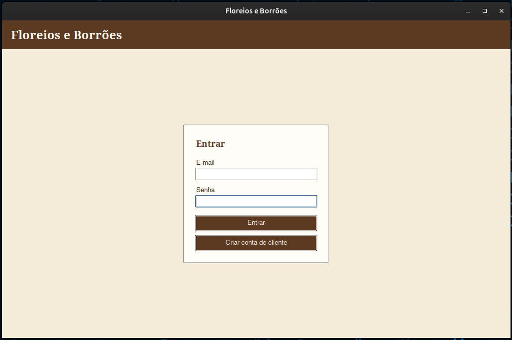
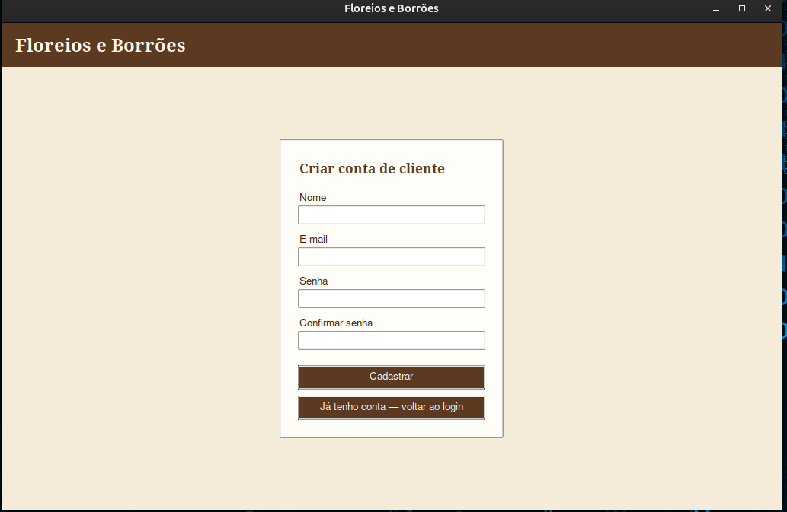
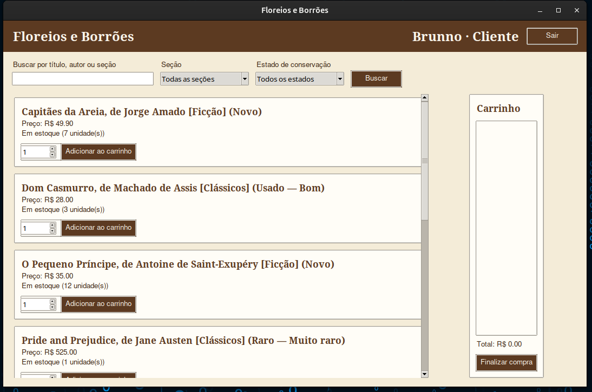
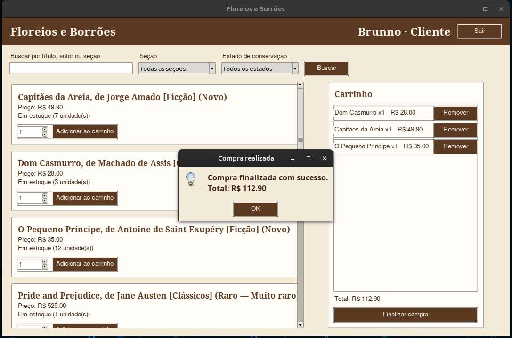
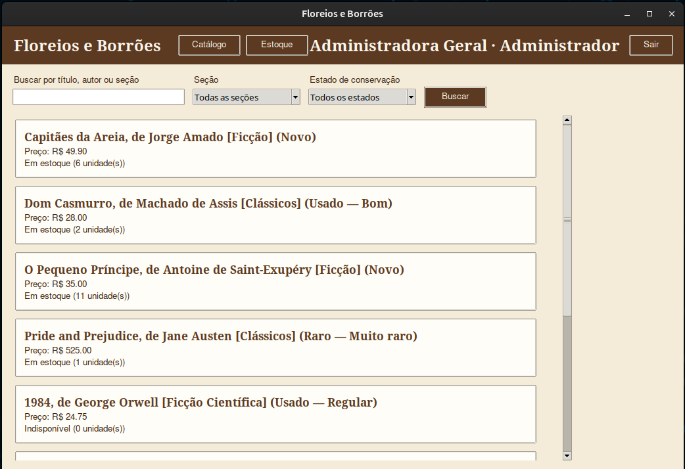
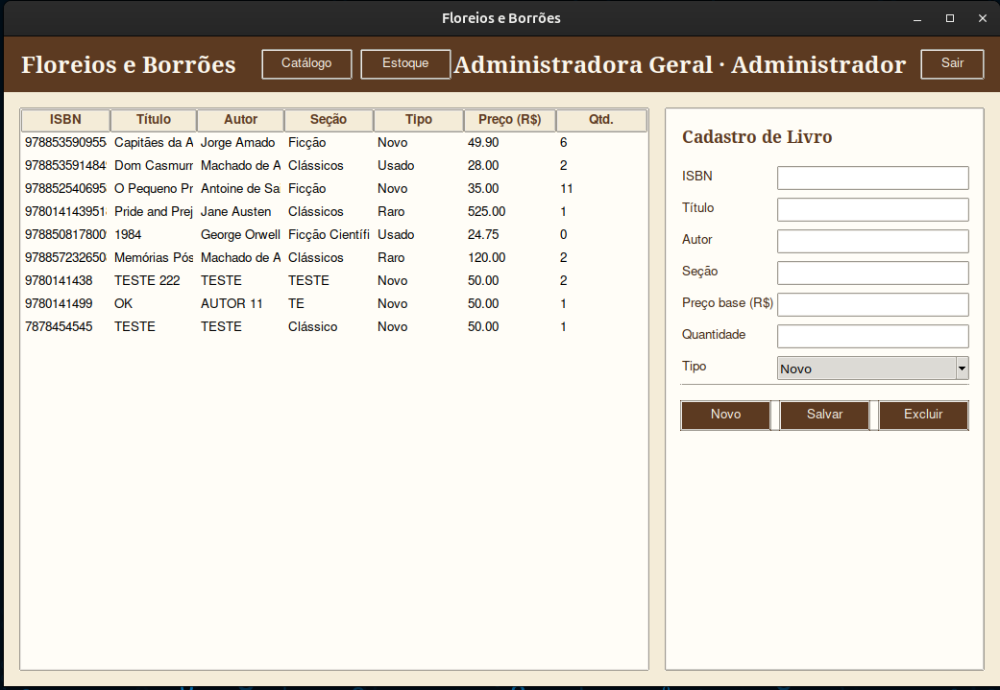

Extensão digital de uma livraria física localizada em um centro histórico. A proposta é simular a organização de uma biblioteca física, com estantes digitais, priorizando calmaria e imersão literária — em contraste com a agitação do cotidiano urbano.
Aplicação desktop (Python + Tkinter), com persistência local em arquivos JSON — sem necessidade de servidor ou conexão externa.
A livraria física possui um acervo vasto e rotativo, o que dificulta que clientes saibam se um título está disponível antes de se deslocarem até o local. A ausência de um catálogo digital impede que novos leitores conheçam a curadoria remotamente, limitando o alcance da livraria ao público que já transita fisicamente pela região.
Sem visibilidade remota do estoque, a livraria perde oportunidades de venda e dificulta o trabalho de gestão do próprio acervo, que depende de controle manual.
# dominio/item_acervo.py class Livro(ABC): @abstractmethod def calcular_preco(self) -> float: ... @abstractmethod def descricao_catalogo(self) -> str: ... # dominio/livro_usado.py class LivroUsado(Livro): def calcular_preco(self) -> float: return round(self.preco_base * self.estado_conservacao.fator_depreciacao(), 2) def descricao_catalogo(self) -> str: return f"{self._descricao_base()} (Usado — {self.estado_conservacao.value})" # dominio/livro_raro.py class LivroRaro(Livro): def calcular_preco(self) -> float: return round(self.preco_base * self.grau_raridade.fator_agio(), 2) def descricao_catalogo(self) -> str: return f"{self._descricao_base()} (Raro — {self.grau_raridade.value})"
LivroNovo, LivroUsado e LivroRaro herdam de Livro e sobrescrevem
calcular_preco()/descricao_catalogo() com regras próprias. O catálogo chama o mesmo método
em qualquer livro, e o comportamento varia conforme o tipo real do objeto — polimorfismo.
# dominio/item_acervo.py class Livro(ABC): def __init__(self, isbn, titulo, autor, secao, preco_base, quantidade): self.__isbn = self.__validar_isbn(isbn) # atributo privado ... @staticmethod def __validar_isbn(isbn: str) -> str: # método privado digitos = isbn.replace("-", "").replace(" ", "") if len(digitos) not in (10, 13) or not digitos.isdigit(): raise ValueError(f"ISBN inválido: {isbn!r}") return digitos # servicos/estoque.py class Estoque: @singledispatchmethod def adicionar(self, item: object, quantidade: int = 0) -> None: raise TypeError(...) @adicionar.register def _(self, item: Livro, quantidade: int = 0) -> None: ... # adicionar(livro) @adicionar.register def _(self, item: str, quantidade: int = 0) -> None: ... # adicionar(isbn, quantidade)
__isbn e __validar_isbn são privados (name mangling). Estoque.adicionar() é
sobrecarregado via @singledispatchmethod: aceita um objeto Livro completo
ou apenas um ISBN (str) com a quantidade a somar.
# main.py def main() -> None: repositorio = RepositorioJson(CAMINHO_ACERVO) estoque = Estoque(repositorio.carregar()) # objeto 1 catalogo = Catalogo(estoque) # objeto 2 repositorio_usuarios = RepositorioUsuariosJson(CAMINHO_USUARIOS) usuarios = Usuarios(repositorio_usuarios.carregar()) # objeto 3 repositorio_caixa = RepositorioCaixaJson(CAMINHO_CAIXA) vendas = repositorio_caixa.carregar() caixa = Caixa(estoque) # objeto 4 app = App( # objeto 5 catalogo, estoque, usuarios, caixa, persistir_acervo=lambda: repositorio.salvar(estoque.livros), persistir_usuarios=lambda: repositorio_usuarios.salvar(usuarios.usuarios), persistir_venda=_persistir_venda, ) app.mainloop()
O programa principal instancia múltiplos objetos (Estoque, Catalogo,
Usuarios, Caixa, App) e conecta as camadas de domínio, serviços e
infraestrutura antes de iniciar a interface gráfica.

Ponto de entrada da aplicação.
usuarios.json
Cadastro self-service para novos clientes.

Visão principal do cliente, com busca, filtros e carrinho.

Finalização da compra a partir do carrinho.
caixa.json
O administrador acessa a mesma busca/filtros do cliente, sem carrinho.

Painel de gestão completa do acervo (CRUD).
Floreios e Borrões — catálogo digital e gestão de acervo
Anderson Rodrigues · Brunno Colombo · João Vitor Santos